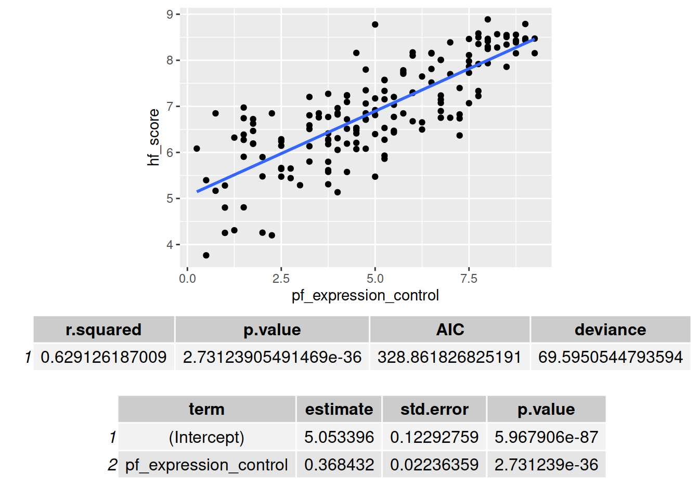
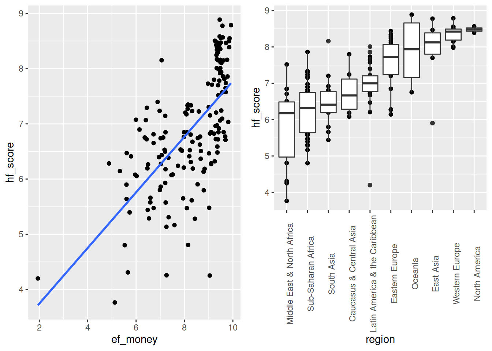
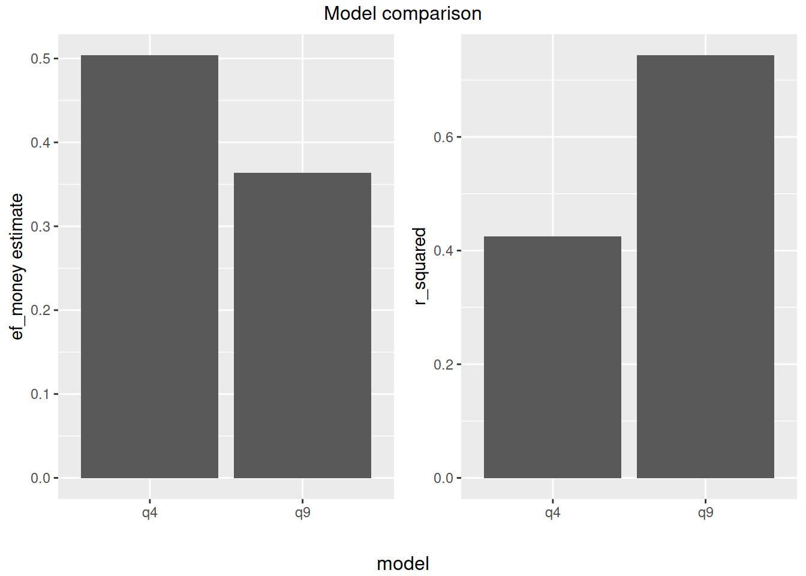
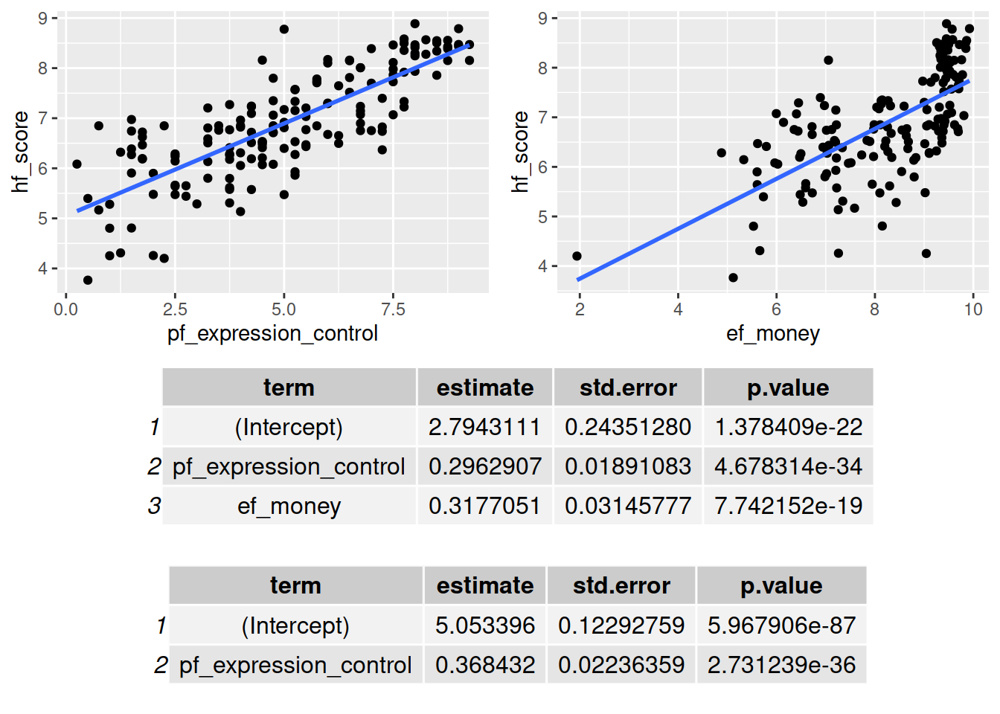
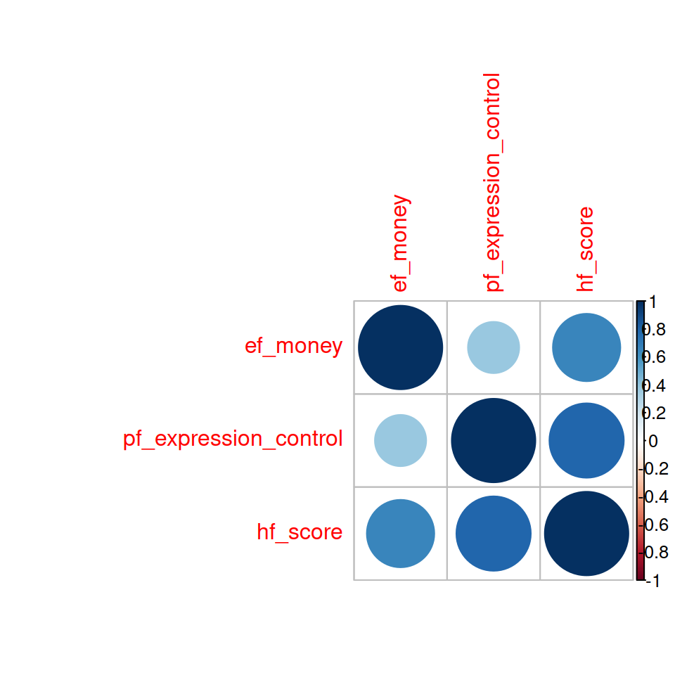
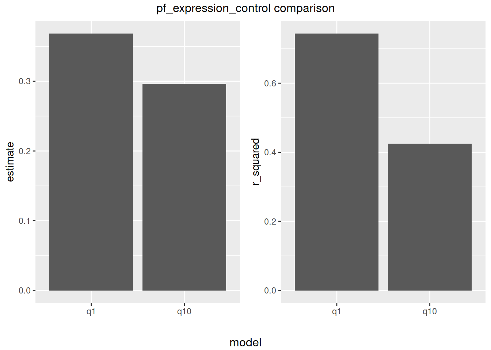
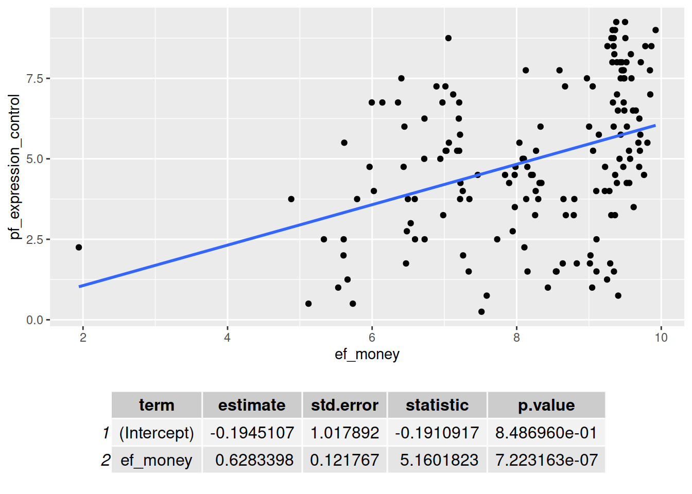

assignment
leoniethomas
2021-03-01
Last updated: 2021-03-05
Checks: 7 0
Knit directory: myproject/
This reproducible R Markdown analysis was created with workflowr (version 1.6.2). The Checks tab describes the reproducibility checks that were applied when the results were created. The Past versions tab lists the development history.
Great! Since the R Markdown file has been committed to the Git repository, you know the exact version of the code that produced these results.
Great job! The global environment was empty. Objects defined in the global environment can affect the analysis in your R Markdown file in unknown ways. For reproduciblity it’s best to always run the code in an empty environment.
The command set.seed(20210301) was run prior to running the code in the R Markdown file. Setting a seed ensures that any results that rely on randomness, e.g. subsampling or permutations, are reproducible.
Great job! Recording the operating system, R version, and package versions is critical for reproducibility.
Nice! There were no cached chunks for this analysis, so you can be confident that you successfully produced the results during this run.
Great job! Using relative paths to the files within your workflowr project makes it easier to run your code on other machines.
Great! You are using Git for version control. Tracking code development and connecting the code version to the results is critical for reproducibility.
The results in this page were generated with repository version 6840816. See the Past versions tab to see a history of the changes made to the R Markdown and HTML files.
Note that you need to be careful to ensure that all relevant files for the analysis have been committed to Git prior to generating the results (you can use wflow_publish or wflow_git_commit). workflowr only checks the R Markdown file, but you know if there are other scripts or data files that it depends on. Below is the status of the Git repository when the results were generated:
Unstaged changes:
Deleted: analysis/assignment2.Rmd
Note that any generated files, e.g. HTML, png, CSS, etc., are not included in this status report because it is ok for generated content to have uncommitted changes.
These are the previous versions of the repository in which changes were made to the R Markdown (analysis/assignment.Rmd) and HTML (docs/assignment.html) files. If you’ve configured a remote Git repository (see ?wflow_git_remote), click on the hyperlinks in the table below to view the files as they were in that past version.
| File | Version | Author | Date | Message |
|---|---|---|---|---|
| Rmd | 6840816 | leoniethomas | 2021-03-05 | Add my first analysis |
| html | d10a216 | leoniethomas | 2021-03-01 | Build site. |
| html | 60031db | leoniethomas | 2021-03-01 | Build site. |
| html | 09b8863 | leoniethomas | 2021-03-01 | Build site. |
| html | 22b8cb5 | leoniethomas | 2021-03-01 | Build site. |
| html | f94308e | leoniethomas | 2021-03-01 | Build site. |
| html | 61a9f2c | leoniethomas | 2021-03-01 | Build site. |
| html | 64004b7 | leoniethomas | 2021-03-01 | Build site. |
| html | d30f3eb | leoniethomas | 2021-03-01 | Build site. |
| Rmd | edfe9fb | leoniethomas | 2021-03-01 | Add my first analysis |
| html | 45af1e4 | leoniethomas | 2021-03-01 | Build site. |
| html | 78789d0 | leoniethomas | 2021-03-01 | Build site. |
| Rmd | 3103c97 | leoniethomas | 2021-03-01 | Add my first analysis |
| html | 483dd17 | leoniethomas | 2021-03-01 | Build site. |
| html | 2b01bb6 | leoniethomas | 2021-03-01 | Build site. |
| html | 62e840f | leoniethomas | 2021-03-01 | Build site. |
| Rmd | 8d5740a | leoniethomas | 2021-03-01 | Add my first analysis |
The tasks based on exercises from Reka:
getwd()[1] "/home/lthomas/Documents/Studium/Master/Seminare/Bioinfo_Seminare/R_course/myproject"setwd("/home/lthomas/Documents/Studium/Master/Seminare/Bioinfo_Seminare/R_course/")
repository_name <- "myproject"1. Create a workflowr project
library("workflowr")
wflow_start(repository_name)
setwd(paste0("/home/lthomas/Documents/Studium/Master/Seminare/Bioinfo_Seminare/R_course/", repository_name,"/"))2. Set it up so it works with github.
wflow_git_config(user.name = "leoniethomas", user.email = "leonie.thomas@stud.uni-heidelberg.de", overwrite = TRUE)
wflow_use_github(username = "leoniethomas", repository = repository_name, create_on_github = T)3. Create a Markdown file in the analyis folder and solve the exercises from Rajbir.
wflow_open("analysis/assignment.Rmd")4. Add the following code to the end of the Rmd file and set eval=TRUE (see the code in the assignment.Rmd file):
4. Publish and push the file to github.
#wflow_build()
#wflow_view()
wflow_status()
wflow_publish(c("analysis/index.Rmd", "analysis/about.Rmd", "analysis/license.Rmd", "analysis/assignment.Rmd"),
"Publish the initial files for myproject")
wflow_git_push()5. Set up the github pages with the repository.
system(paste0("firefox https://github.com/leoniethomas/", repository_name, "/settings"))
# Github pages -> Source = master & folder = /docs -> Save 6. As the result of the assignment, send us the link of your webpage:
system(paste0("firefox https://leoniethomas.github.io/", repository_name, "/"))Based on the exercises from Rajbir: here
7. Use the hfi dataset from the openintro package
library(openintro)
data("hfi")
# Selecting just one year, since the values from the same country but different years are not independent from each other.
hfi_2016 <- hfi %>%
filter(year == 2016)8.Fit a new model that uses pf_expression_control to predict hf_score, or the total human freedom score.
#1. lm hf_score = a + b * pf_expression_control
Q8 <- lm(hf_score ~ pf_expression_control, data = hfi_2016)\[ \text{hf_score} = intercept + estimate * \text{pf_expression_control} \]

| Version | Author | Date |
|---|---|---|
| 78789d0 | leoniethomas | 2021-03-01 |

| Version | Author | Date |
|---|---|---|
| 78789d0 | leoniethomas | 2021-03-01 |
Fitted Model:
\[ \text{hf_score} = 5.053 + 0.368 * \text{pf_expression_control} \]
9. Again add region to the model from Q4. Compare the slope and \(R^2\) with the model from Q4.
Q4 model:
\[ \text{hf_score} = intercept + estimate * \text{ef_money} \] Q9 model:
\[ \text{hf_score} = intercept + estimate_1 * \text{ef_money} + estimate_2 * \text{region}\]
Q4 <- lm(hf_score ~ ef_money, data = hfi_2016)
Q9 <- lm(hf_score ~ ef_money + region, data = hfi_2016)
| Version | Author | Date |
|---|---|---|
| 78789d0 | leoniethomas | 2021-03-01 |
| model | term | estimate | std.error | p.value |
|---|---|---|---|---|
| q4 | (Intercept) | 2.7366794 | 0.3871332 | 0.0000000 |
| q4 | ef_money | 0.5038764 | 0.0463114 | 0.0000000 |
| q9 | (Intercept) | 3.5574922 | 0.3931930 | 0.0000000 |
| q9 | ef_money | 0.3640628 | 0.0360710 | 0.0000000 |
| q9 | regionEast Asia | 0.8728750 | 0.3264302 | 0.0083205 |
| q9 | regionEastern Europe | 0.8294191 | 0.2599669 | 0.0017278 |
| q9 | regionLatin America & the Caribbean | 0.4152005 | 0.2566373 | 0.1077822 |
| q9 | regionMiddle East & North Africa | -0.7930394 | 0.2651774 | 0.0032523 |
| q9 | regionNorth America | 1.3833360 | 0.4618558 | 0.0032067 |
| q9 | regionOceania | 1.4344351 | 0.3657254 | 0.0001328 |
| q9 | regionSouth Asia | 0.0879279 | 0.2707942 | 0.7458547 |
| q9 | regionSub-Saharan Africa | -0.0173774 | 0.2510335 | 0.9449035 |
| q9 | regionWestern Europe | 1.4020875 | 0.2666997 | 0.0000005 |
Q4 model:
\[ \text{hf_score} = 2.737 + 0.5038764 * \text{ef_money} \] Q9 model:
\[ \text{hf_score} = 3.5574922 + 0.3640628 * \text{ef_money} + \sum \limits _{country} estimate_{country} * 1 \]

Since the r.squared value is increased for the Q9 Model, there seems to be a effect of region on the hf_score. The effect of ef_money is for both models significant. When looking at the regions, not all of them seem to have a significant effect on the hf_score, therefore a feature selection would be nice to perform on all the region features, to select for those useful for the model. The effect magnitude (the slope) which a change in ef_money has on the hf_score decreases for the Q9 model.
10. Finally fit a model with ef_money and pf_expression_control as exposures and hf_score as outcome. Compare the slope and \(R^2\) from the models from Q1. Could ef_money be a confounder?
Q1 model:
\[ \text{hf_score} = intercept + estimate * \text{pf_expression_control} \] Q10 model:
\[ \text{hf_score} = intercept + estimate_1 * \text{pf_expression_control} + estimate_2 * \text{ef_money}\]
Q10 <- lm(hf_score ~ pf_expression_control + ef_money, data = hfi_2016)
Q1 <- lm(hf_score ~ pf_expression_control, data = hfi_2016)

Q1 model:
\[ \text{hf_score} = 5.053 + 0.368 * \text{pf_expression_control} \] Q10 model:
\[ \text{hf_score} = 2.794 + 0.296 * \text{pf_expression_control} +0.318 * \text{ef_money}\]

Through adding of ef_money to the model the performance (r.squared) decreases significantly and the effecto of pf_expression_outome on the hf_score also decreases. Additionally pf_expression and ef_money show a correlation. Through the decrease in performance by adding a variable and the correlation we can conclude that ef_money might be a confounder between pf_expression_control as exposure and hf_score as outcome.
11. Use a linear regression model (and scatter plot) with ef_money as exposure and pf_expression_control as outcome, to study whether ef_money has an association with pf_expression_control as well. This might validate our finding that ef_money is a confounder between pf_expression_control as exposure and hf_score as outcome from Q6.
Q11 model:
\[ \text{pf_expression_mode} = intercept + estimate * \text{ef_money} \]
Q11 <- lm( pf_expression_control ~ ef_money, data = hfi_2016)
Q11 model:
\[ \text{pf_expression_mode} = -0.195 + 0.368 * \text{ef_money} \] Since the effect of ef_money on pf_expression is significant (around 0.63 per pf_expression_control unit) the ef_money is a confounder between pf_expression_control as exposure and hf_score as outcome.

sessionInfo()R version 4.0.4 (2021-02-15)
Platform: x86_64-pc-linux-gnu (64-bit)
Running under: Ubuntu 20.04.1 LTS
Matrix products: default
BLAS: /usr/lib/x86_64-linux-gnu/blas/libblas.so.3.9.0
LAPACK: /usr/lib/x86_64-linux-gnu/lapack/liblapack.so.3.9.0
locale:
[1] LC_CTYPE=en_US.UTF-8 LC_NUMERIC=C
[3] LC_TIME=en_GB.UTF-8 LC_COLLATE=en_US.UTF-8
[5] LC_MONETARY=en_GB.UTF-8 LC_MESSAGES=en_US.UTF-8
[7] LC_PAPER=en_GB.UTF-8 LC_NAME=C
[9] LC_ADDRESS=C LC_TELEPHONE=C
[11] LC_MEASUREMENT=en_GB.UTF-8 LC_IDENTIFICATION=C
attached base packages:
[1] grid stats graphics grDevices utils datasets methods
[8] base
other attached packages:
[1] plotly_4.9.3 knitr_1.31 gridExtra_2.3
[4] corrplot_0.84 broom_0.7.5 openintro_2.0.0
[7] usdata_0.1.0 cherryblossom_0.1.0 airports_0.1.0
[10] forcats_0.5.1 stringr_1.4.0 purrr_0.3.4
[13] readr_1.4.0 tidyr_1.1.2 tibble_3.0.6
[16] ggplot2_3.3.3 tidyverse_1.3.0 dplyr_1.0.4
[19] workflowr_1.6.2
loaded via a namespace (and not attached):
[1] httr_1.4.2 jsonlite_1.7.2 viridisLite_0.3.0 splines_4.0.4
[5] modelr_0.1.8 assertthat_0.2.1 highr_0.8 cellranger_1.1.0
[9] yaml_2.2.1 pillar_1.4.7 backports_1.2.1 lattice_0.20-41
[13] glue_1.4.2 digest_0.6.27 promises_1.2.0.1 rvest_0.3.6
[17] colorspace_2.0-0 htmltools_0.5.1.1 httpuv_1.5.5 Matrix_1.3-2
[21] pkgconfig_2.0.3 haven_2.3.1 scales_1.1.1 whisker_0.4
[25] later_1.1.0.1 git2r_0.28.0 mgcv_1.8-33 farver_2.0.3
[29] generics_0.1.0 ellipsis_0.3.1 withr_2.4.1 lazyeval_0.2.2
[33] cli_2.3.0 magrittr_2.0.1 crayon_1.4.1 readxl_1.3.1
[37] evaluate_0.14 fs_1.5.0 fansi_0.4.2 nlme_3.1-152
[41] xml2_1.3.2 tools_4.0.4 data.table_1.14.0 hms_1.0.0
[45] lifecycle_1.0.0 munsell_0.5.0 reprex_1.0.0 compiler_4.0.4
[49] rlang_0.4.10 rstudioapi_0.13 htmlwidgets_1.5.3 labeling_0.4.2
[53] rmarkdown_2.7 gtable_0.3.0 DBI_1.1.1 R6_2.5.0
[57] lubridate_1.7.9.2 utf8_1.1.4 rprojroot_2.0.2 stringi_1.5.3
[61] Rcpp_1.0.6 vctrs_0.3.6 dbplyr_2.1.0 tidyselect_1.1.0
[65] xfun_0.21